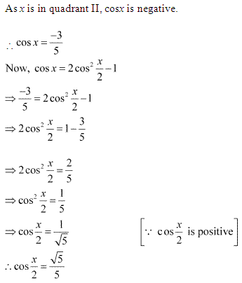

Get Free NCERT Solutions for Class 11 Maths Chapter 3 Trigonometric Functions Ex 3.1, Ex 3.2, Ex 3.3, Ex 3.4, and Miscellaneous Exercise PDF in Hindi and English Medium. Trigonometric Functions Class 11 Maths NCERT Solutions are extremely helpful while doing your homework. Trigonometric Functions All Exercises Class 11 Maths NCERT Solutions were prepared by Experienced LearnCBSE.in Teachers.
Class 11 Maths Trigonometric Functions NCERT Solutions in English Medium and Hindi Medium
- Trigonometric Functions Class 11 Ex 3.1
- Trigonometric Functions Class 11 Ex 3.2
- Trigonometric Functions Class 11 Ex 3.3
- Trigonometric Functions Class 11 Ex 3.4
- Trigonometric Functions Class 11 Miscellaneous Exercise
- त्रिकोणमितीय फलन प्रश्नावली 3.1 का हल हिंदी में
- त्रिकोणमितीय फलन प्रश्नावली 3.2 का हल हिंदी में
- त्रिकोणमितीय फलन प्रश्नावली 3.3 का हल हिंदी में
- त्रिकोणमितीय फलन प्रश्नावली 3.4 का हल हिंदी में
- त्रिकोणमितीय फलन विविध प्रश्नावली का हल हिंदी में
- Trigonometry Formulas
- Trigonometry Functions Class 11 Notes
- NCERT Exemplar Class 11 Maths Chapter 3 Trigonometric Functions
- Trig Cheat Sheet
- JEE Main Trigonometry Previous Year Questions
Free download NCERT Solutions for Class 11 Maths Chapter 3 Trigonometric Functions Ex 3.1, Ex 3.2, Ex 3.3, Ex 3.4, and Miscellaneous Exercise PDF in Hindi Medium as well as in English Medium for CBSE, Uttarakhand, Bihar, MP Board, Gujarat Board, BIE, Intermediate and UP Board students, who are using NCERT Books based on updated CBSE Syllabus for the session 2019-20.
NCERT Solutions for Class 11 Maths Chapter 3 Trigonometric Functions
| Section Name | Topic Name |
| 3.1 | Introduction |
| 3.2 | Angles |
| 3.3 | Trigonometric Functions |
| 3.4 | Trigonometric Functions of Sum and Difference of Two Angles |
| 3.5 | Trigonometric Equations |
| 3.6 | Summary |
NCERT Solutions for Class 11 Maths Chapter 3 Exercise 3.1
Ex 3.1 Class 11 Maths Question 1:
Ans:


Ex 3.1 Class 11 Maths Question 2:
Ans:

More Resources for CBSE Class 11
- NCERT Solutions
- NCERT Solutions Class 11 Maths
- NCERT Solutions Class 11 Physics
- NCERT Solutions Class 11 Chemistry
- NCERT Solutions Class 11 Biology
- NCERT Solutions Class 11 Hindi
- NCERT Solutions Class 11 English
- NCERT Solutions Class 11 Business Studies
- NCERT Solutions Class 11 Accountancy
- NCERT Solutions Class 11 Psychology
- NCERT Solutions Class 11 Entrepreneurship
- NCERT Solutions Class 11 Indian Economic Development
- NCERT Solutions Class 11 Computer Science
Ex 3.1 Class 11 Maths Question 3:
Ans:
Ex 3.1 Class 11 Maths Question 4:
Ans:
Ex 3.1 Class 11 Maths Question 5:
Ans:


Ex 3.1 Class 11 Maths Question 6:
Ans:
Ex 3.1 Class 11 Maths Question 7:
Ans:


NCERT Solutions for Class 11 Maths Chapter 3 Exercise 3.2
Ex 3.2 Class 11 Maths Question 1:
Ans:
Ex 3.2 Class 11 Maths Question 2:
Ans:
Ex 3.2 Class 11 Maths Question 3:
Ans:
Ex 3.2 Class 11 Maths Question 4:
Ans:
Ex 3.2 Class 11 Maths Question 5:
Ans:
Ex 3.2 Class 11 Maths Question 6:
Ans:
Ex 3.2 Class 11 Maths Question 7:
Ans:
Ex 3.2 Class 11 Maths Question 8:
Ans:
Ex 3.2 Class 11 Maths Question 9:
Ans:
Ex 3.2 Class 11 Maths Question 10:
Ans:


NCERT Solutions for Class 11 Maths Chapter 3 Exercise 3.3
Ex 3.3 Class 11 Maths Question 1:
Ans:
Ex 3.3 Class 11 Maths Question 2:
Ans:
Ex 3.3 Class 11 Maths Question 3:
Ans:
Ex 3.3 Class 11 Maths Question 4:
Ans:
Ex 3.3 Class 11 Maths Question 5:
Ans:
Ex 3.3 Class 11 Maths Question 6:
Ans:
Ex 3.3 Class 11 Maths Question 7:
Ans:
Ex 3.3 Class 11 Maths Question 8:

Ans:
Ex 3.3 Class 11 Maths Question 9:
Ans:
Ex 3.3 Class 11 Maths Question 10:
Ans:
Ex 3.3 Class 11 Maths Question 11:
Ans:
Ex 3.3 Class 11 Maths Question 12:
Ans:
Ex 3.3 Class 11 Maths Question 13:
Ans:
Ex 3.3 Class 11 Maths Question 14:
Ans:
Ex 3.3 Class 11 Maths Question 15:

Ans:
Ex 3.3 Class 11 Maths Question 16:
Ans:
Ex 3.3 Class 11 Maths Question 17:
Ans:
Ex 3.3 Class 11 Maths Question 18:
Ans:
Ex 3.3 Class 11 Maths Question 19:
Ans:

Ex 3.3 Class 11 Maths Question 20:
Ans:
Ex 3.3 Class 11 Maths Question 21:
Ans:
Ex 3.3 Class 11 Maths Question 22:
Ans:
Ex 3.3 Class 11 Maths Question 23:
Ans:
Ex 3.3 Class 11 Maths Question 24:
Ans:
Ex 3.3 Class 11 Maths Question 25:
Ans:


Class 11 Maths NCERT Solutions Chapter 3 Exercise 3.4
Ex 3.4 Class 11 Maths Question 1:
Ans:
Ex 3.4 Class 11 Maths Question 2:
Ans:
Ex 3.4 Class 11 Maths Question 3:
Ans:
Ex 3.4 Class 11 Maths Question 4:
Ans:
Ex 3.4 Class 11 Maths Question 5:
Ans:
Ex 3.4 Class 11 Maths Question 6:
Ans:
Ex 3.4 Class 11 Maths Question 7:
Ans:
Ex 3.4 Class 11 Maths Question 8:
Ans:
Ex 3.4 Class 11 Maths Question 9:
Ans:


NCERT Solutions for Class 11 Maths Chapter 3 Miscellaneous Exercise
Miscellaneous Exercise Class 11 Maths Question 1:
Ans:
Miscellaneous Exercise Class 11 Maths Question 2:
Ans:

Miscellaneous Exercise Class 11 Maths Question 3:
Ans:
Miscellaneous Exercise Class 11 Maths Question 4:
Ans:
Miscellaneous Exercise Class 11 Maths Question 5:
Ans:
Miscellaneous Exercise Class 11 Maths Question 6:
Ans:
Miscellaneous Exercise Class 11 Maths Question 7:
Ans:
Miscellaneous Exercise Class 11 Maths Question 8:
Ans:



Miscellaneous Exercise Class 11 Maths Question 9:
Ans:
Miscellaneous Exercise Class 11 Maths Question 10:
Ans:


त्रिकोणमितीय फलन प्रश्नावली 3.1 का हल हिंदी में
प्रश्न 1.
निम्नलिखित डिग्री माप के संगत रेडियन माप ज्ञात कीजिए।
(i) 25°
(ii) – 47° 30′
(iii) 240°
(iv) 520°
प्रश्न 2.
निम्नलिखित रेडियन माप के संगत डिग्री माप ज्ञात कीजिए (π = \(\frac { 22 }{ 7 }\)) का प्रयोग करें:
(i) \(\frac { 11 }{ 16 }\)
(ii) -4
(iii) \(\frac { 5\pi }{ 3 }\)
(iv) \(\frac { 7\pi }{ 6 }\)
प्रश्न 3.
एक-पहिया एक मिनट में 360° परिक्रमण करता है तो एक सेकंड में कितने रेडियन माप का कोण बनाएगा?
हल:
परिक्रमण में पहिया द्वारा बना कोण = 27 रेडियन
360 परिक्रमण में पहिया द्वारा बना कोण = 360 x 2π रेडियन
1 मिनट अर्थात् 60 सेकण्ड में 360 x 2π रेडियन का कोण बनता है।
1 सेकण्ट में चहिया द्वारा बना कोण = \(\frac { 360\times 2\pi }{ 60 }\) = 12π रेडियन।
प्रश्न 4.
एक वृत्त जिसकी त्रिज्या 100 सेमी है, 22 सेमी लंबाई की चाप वृत्त के केन्द्र पर कितने डिग्री माप का कोण बनाएगी ? (π = \(\frac { 22 }{ 7 }\) का प्रयोग कीजिए)
प्रश्न 5.
एक वृत्त जिसका व्यास 40 सेमी. है, की एक जीवा 20 सेमी. लंबाई की है तो इसके संगत छोटे चाप की लंबाई ज्ञात कीजिए।
हल:
व्यास = 40 सेमी
त्रिज्या = 20 सेमी
प्रश्न 6.
यदि दो वृत्तों के समान लंबाई वाले चाप अपने केन्द्रों पर क्रमशः 60° तथा 75° के कोण बनाते हों, तो उन्क लिन्याओं को अनुपात ज्ञात कीजिए।
प्रश्न 7.
75 सेमी लम्बाई वाले एक दोलायमान दोलक का एक सिरे से दूसरे सिरे तक दोन करने से जो कोण बनता है, उसका माप रेडियन में ज्ञात कीजिए, जबकि उसके नोक द्वारा बनाए गए चाय की लम्बाई निम्नलिखित हैं:
(i) 10 सेमी
(ii) 15 सेमी
(iii) 21 सेमी
Exercise 3.1
Q.1: Calculate the radian measurement of the given degree measurement:
(i). 25∘
(ii). 240∘
(iii). −47∘30‘
(iv). 520∘
Q.2: Calculate the degree measurement of the given degree measurement: [Use π = \(\\ \frac { 22 }{ 7 } \)]
(i) \(\\ \frac { 11 }{ 16 } \)
(ii) -4
(iii) \(\frac { 5\pi }{ 3 } \)
(iv) \(\frac { 7\pi }{ 6 } \)
Q.3: In a minute, wheel makes 360 revolutions. Through how many radians does it turn in 1 second?
Q.4: Calculate the degree measurement of the angle subtended at the centre of a circle of radius 100 m by an arc of length 22 m.
Q.5: In a circle of diameter 40 m, the length of the chord 20 m. Find the length of minor arc of chord.
Q.6: In two circles, arcs which has same length subtended at an angle of 60∘ and 75∘ at the center. Calculate the ratio of their radii.
Q.7: Calculate the angle in radian through which a pendulum swings if the length is 75 cm and the tip describes an arc of length
(i) 10 cm
(ii) 15 cm
(iii) 21 cm
Exercise 3.2
Q.1: Calculate the values of five trigonometric func. if cosy = \(– \frac { 1 }{ 2 } \) and y lies in 3rd quadrant.
(i) sec y
(ii) sin y
(iii) cosec y
(iv) tan y
(v) cot y
Q.2: Calculate the other five trigonometric function if we are given the values for sin y = \(\\ \frac { 3 }{ 5 } \), where y lies in second quadrant.
Q.3: Find the values of other five trigonometric functions if coty=\(\\ \frac { 3 }{ 4 } \), where y lies in the third quadrant.
Q.4: Find the values of other five trigonometric if secy=\(\\ \frac { 13 }{ 5 } \), where y lies in the fourth quadrant.
Q.5: Find the values of other five trigonometric function if tan y = \(– \frac { 5 }{ 12 } \) and y lies in second quadrant.
Q.6: Calculate the value of trigonometric function sin 765°.
Q.7: Calculate the value of trigonometric function cosec [-1410°]
Q.8: Calculate the value of the trigonometric function tan \(\frac { 19\pi }{ 3 } \).
Q.9: Calculate the value of the trigonometric function sin \(-\frac { 11\pi }{ 3 } \).
Q.10: Calculate the value of the trigonometric function cot \(-\frac { 15\pi }{ 4 } \)
Exercise 3.3
Q.1: Prove:
sin²\(\frac { \pi }{ 6 } \)+cos²\(\frac { \pi }{ 3 } \)–tan²\(\frac { \pi }{ 4 } \)= \(– \frac { 1 }{ 2 } \)
Q.2: Prove:
2sin²\(\frac { \pi }{ 6 } \)+cosec²\(\frac { 7\pi }{ 6 } \)6cos²\(\frac { \pi }{ 3 } \)=\(\\ \frac { 3 }{ 2 } \)
Q.3: Prove:
cot²\(\frac { \pi }{ 6 } \)+cosec\(\frac { 5\pi }{ 6 } \)+3tan²latex s=2]\frac { \pi }{ 6 } [/latex]=6
Q.4: Prove:
2sin²\(\frac { 3\pi }{ 4 } \)+2cos²\(\frac { \pi }{ 4 } \)+2sec²\(\frac { \pi }{ 3 } \)=10
Q.5: Calculate the value of:
(i). sin75∘
(ii). tan15∘
Q.6:Prove:
cos(\(\frac { \pi }{ 4 } \)–x)cos(\(\frac { \pi }{ 4 } \)–y)–sin(\(\frac { \pi }{ 4 } \)–x)sin(\(\frac { \pi }{ 4 } \)–y)=sin(x+y)
Q.7: Prove:
\(\frac { tan(\frac { \pi }{ 4 } +x) }{ tan(\frac { \pi }{ 4 } -x) } ={ \left( \frac { 1+tanx }{ 1-tanx } \right) }^{ 2 }\)
Q.8: Prove:
\(\frac { cos(\pi +x)cos(-x) }{ sin(\pi -x)cos\left( \frac { \pi }{ 2 } +x \right) } ={ cot }^{ 2 }x\)
Q.9: Prove:
\(cos(\frac { 3\pi }{ 2 } +x)cos(2\pi +x)[cot(\frac { 3\pi }{ 2 } -x)+cot(2\pi +x)]=1\)
Q.10: Prove:
sin(n+1)xsin(n+2)x+cos(n+1)xcos(n+2)x=cosx
Q.11 Prove:
\(cos(\frac { 3\pi }{ 4 } +x)-cos(\frac { 3\pi }{ 4 } -x)\)=−√2sinx
Q.12: Prove:
sin²6x–sin²4x=sin2x sin10x
Q.13: Prove:
cos²2x–cos²6x=sin4x sin8x
Q.14:Prove:
sin2x+2sin4x+sin6x=4cos²x sin4x
Q.15: Prove:
cot4x(sin5x+sin3x)=cotx(sin5x–sin3x)
Q.16: Prove:
\(\frac { cos9x-cos5x }{ sin17x-sin3x } =-\frac { sin2x }{ cos10x } \)
Q.17: Prove:
\(\frac { sin5x+sin3x }{ cos5x+cos3x } =tan4x\)
Q.18: Prove:
\(\frac { sinx-siny }{ cosx+cosy } =tan\frac { x-y }{ 2 } \)
Q.19: Prove:
\(\frac { sinx+sin3x }{ cosx+cos3x } =tan2x\)
Q.20: Prove:
\(\frac { sinx-sin3x }{ { sin }^{ 2 }x-{ cos }^{ 2 }x } =2sinx\)
Q.21: Prove:
\(\frac { cos4x+cos3x+cos2x }{ sin4x+sin3x+sin2x } =cot3x\)
Q.22: Prove:
cotxcot2x–cot2xcot3x–cot3xcotx=1
Q.23: Prove:
\(tan4x=\frac { 4tanx(1-{ tan }^{ 2 }x) }{ 1-6{ tan }^{ 2 }x+{ tan }^{ 4 }x } \)
Q.24: Prove:
cos4x=1–8sin²xcos²x
Q.25: Prove:
cos6x=32cos6x–48cos4x+18cos2x−1
Exercise 3.4
Q.1: Find general solutions and the principle solutions of the given equation: tan x = √3
Q.2: Find general solutions and the principle solutions of the given equation: sec x = 2
Q.3: Find general solutions and the principle solutions of the given equation: cot = −√3
Q.4: Find general solutions and the principle solutions of the given equation: cosec x = -2
Q.5: Find the general solution of the given equation: cos 4x = cos 2x
Q.6: Find the general solution of the given equation: cos 3x + cos x – cos 2x = 0
Q.7: Find the general solution of the given equation: sin 2x + cos x = 0
Q.8: Find the general solution of the given equation: sec²2x=1–tan2x
Q.9: Find the general solution of the given equation: sin x + sin 3x + sin 5x = 0
Miscellaneous Exercise
Q.1: Prove that:
\(2cos\frac { \pi }{ 13 } cos\frac { 9\pi }{ 13 } +cos\frac { 3\pi }{ 13 } +cos\frac { 5\pi }{ 13 } =0\)
Q.2: Prove that:
(sin3x+sinx)sinx+(cos3x–cosx)cosx=0
Q-3: Prove that:
(cosx+cosy)²+(sinx–siny)²=4cos²\(\\ \frac { x+y }{ 2 } \)
Q-4: Prove that:
(cosx–cosy)²+(sinx–siny)²=4sin²\(\\ \frac { x-y }{ 2 } \)
Q-5: Prove that:
sinx+sin3x+sin5x+sin7x=4cosxcos2xcos4x
Q-6: Prove that:
\(\frac { (sin7x+sin5x)+(sin9x+sin3x) }{ (cos7x+cos5x)+(cos9x+cos3x) } =tan6x\)
Q-7: Show that: sin3y+sin2y–siny=4sinycos\(\\ \frac { y }{ 2 } \)cos\(\\ \frac { 3y }{ 2 } \)
Q-8: The value of tany=\(– \frac { 4 }{ 2 } \) where y in in 2nd quadrant then find out the values of sin\(\\ \frac { y }{ 2 } \),cos\(\\ \frac { y }{ 2 } \) and tan\(\\ \frac { y }{ 2 } \).
Q-9: The value of cosy=\(– \frac { 1 }{ 3 } \) where y in in 3rd quadrant then find out the values of sin\(\\ \frac { y }{ 2 } \),cos\(\\ \frac { y }{ 2 } \) and tan\(\\ \frac { y }{ 2 } \).
Q-10: The value of siny=\(\\ \frac { 1 }{ 4 } \) where y in in 2nd quadrant then find out the values of sin\(\\ \frac { y }{ 2 } \),cos\(\\ \frac { y }{ 2 } \) and tan\(\\ \frac { y }{ 2 } \).
NCERT Solutions for Class 11 Maths All Chapters
- Chapter 1 Sets
- Chapter 2 Relations and Functions
- Chapter 3 Trigonometric Functions
- Chapter 4 Principle of Mathematical Induction
- Chapter 5 Complex Numbers and Quadratic Equations
- Chapter 6 Linear Inequalities
- Chapter 7 Permutation and Combinations
- Chapter 8 Binomial Theorem
- Chapter 9 Sequences and Series
- Chapter 10 Straight Lines
- Chapter 11 Conic Sections
- Chapter 12 Introduction to Three Dimensional Geometry
- Chapter 13 Limits and Derivatives
- Chapter 14 Mathematical Reasoning
- Chapter 15 Statistics
- Chapter 16 Probability